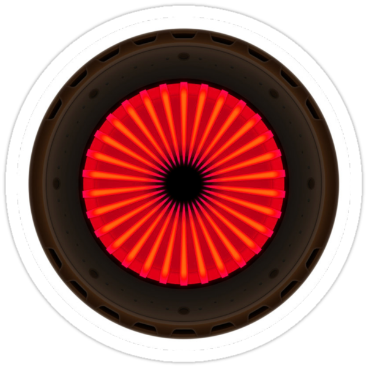

Home
Mechanical
Electrical
Software
Data Flow Diagram
Budget Breakdown
Demonstration

Electrical
The electrical work and features in the Portal Turret replica.
The circuit contains various sensors to respond to external stimulus and motors to control movement.